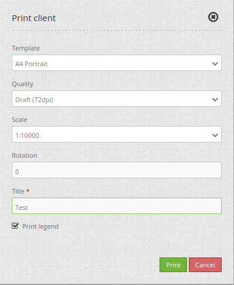
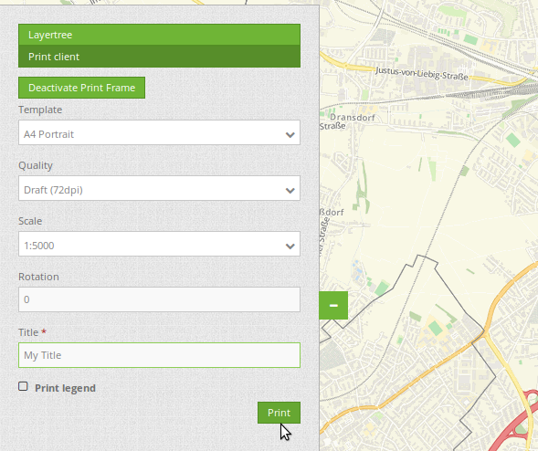
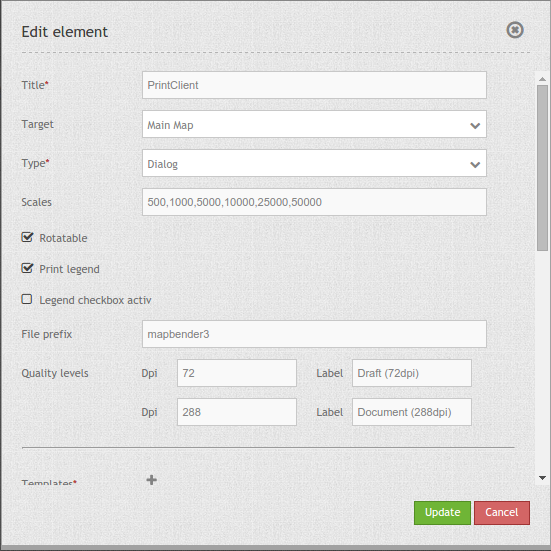
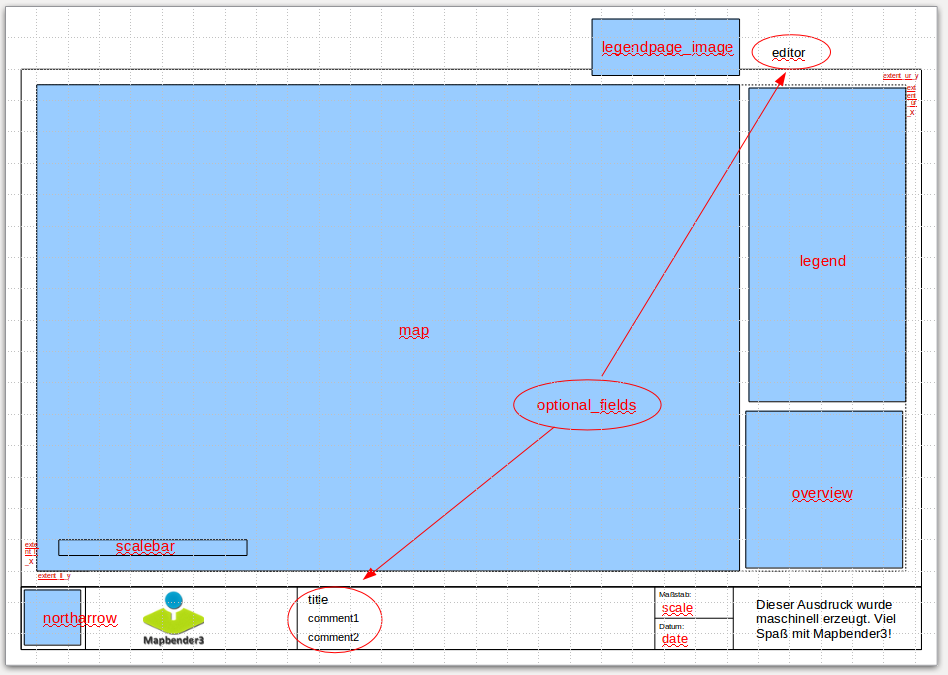
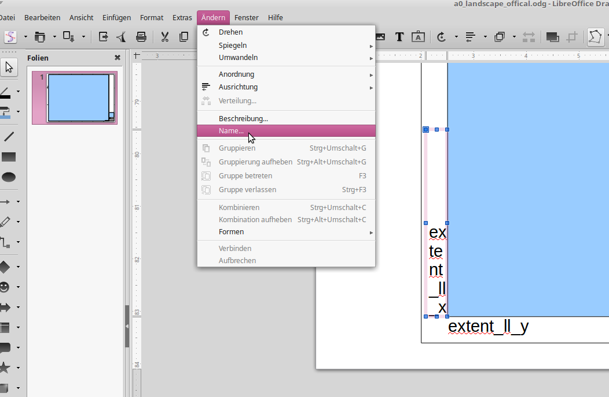

PrintClient¶
Mapbender3 offers a PDF print, which print a defined area of the map. Before you print you can choose via the client these different possibilities:
- Select scale,
- Select quality,
- Rotate the print frame,
- Print legend.
- Optional you can define individual input fields (f.e. title, comment, notice) which will also be printed in the pdf.
The print element uses print templates, which can be modified individually. In the print templates you can define regions for date, scale (text or scalebar), overview map and north arrow.
Mapbender3 contains already a collection of print templates (LibreOffice Draw files in formats A4 to A0), which can be modified individually.
{kind=link}
The PrintClient can be used both as a dialog and an element as part of the sidebar. If it is part of the sidebar, you have to activate the Print Frame first to start the print. If you have finished, you have to deactivate the Print Frame again to use the map again as usual (when used as a dialog this happens automatically by opening and closing the dialog window).
{kind=link}
Configuration¶
{kind=link}
You need a button to show this element or you can use it in the sidepane. See Button for inherited configuration options.
- title: Title of the element. The title will be listed in “Layouts” and allows to distinguish between different buttons. The title will be displayed besides the button if “Show label” is activated.
- target: Id of Map element to query
- type: element or dialog, default is dialog
- scales - define scales to choose from select-box or if empty free scale can be defined in a text-field
- rotatable - true/false use true for rotation, default is true
- print legend - true/false, default is false
- legend checkbox checked - (legend_default_behaviour) - true/false, if true the legend check-box is checked by default
- file_prefix - define the file prefix for the PDF that is generated (file_prefix_date.pdf will be created)
- quality_levels - define quality levels in DPI
- templates: template name, template file name without file extension (Mapbender is looking for file a4portrait.odg an a4portrait.pdf), Template files are located at app/Resources/MapbenderPrintBundle
- label - define a template label for the select-box
- optional_fields - define optional fields:
- title: Name of the optional field, the default value is null (no optional fields are defined).
- label: Label of the optional field.
- options: { required: true } : Type of the optional field. Has to be true or false.
- replace_pattern - You can modify the map-request for printing. You can add additional parameters like map_resolution (for MapServer).
YAML-Definition:¶
target: map # Id of Map element to query
type: dialog # element or dialog, default is dialog
templates:
- { template: a4portrait, label: A4 Portrait} # template name, template file name without file extension (Mapbender is looking for file a4portrait.odg an a4portrait.pdf), Template files are located at app/Resources/MapbenderPrintBundle
- { template: a4landscape, label: A4 Landscape} # template label in the dialog
scales: [5000, 10000, 25000] # define scales to choose from select-box or if empty free scale can be defined in a text-field
quality_levels: # define quality levels in dpi
- { dpi: 72 , label: Draft (72dpi)} # 72 - dpi value, Draft - label
- { dpi: 288, label: Document (288dpi)} # 288 - dpi value, Document - label
rotatable: true # true/false use true for rotation, default is true
legend: true # true/false, default is false
legend_default_behaviour: false # true/false, if true the legend check-box is checked by default
file_prefix: mapbender3 # define the file prefix for the PDF that is generated (file_prefix_date.pdf will be created)
optional_fields: # define optional fields (example title-field)
title: # name of the optional fields, default is null (no optional fields are defined)
label: Title # label of the optional field
options: #
required: false # true or false
comment1:
label: Comment 1
options: { required: false }
comment2:
label: Comment 2
options: { required: false }
editor:
label: Editor
options: { required: true }
replace_pattern: # You can modify the map-request for printing
- # you can add additional parameters like map_resolution (for MapServer)
default: { 288: '&map_resolution=288' }
-
pattern: 'stadtplan.xml' # or you can request a different service which is optimized for printing
replacement: { 288: 'stadtplan_4.xml' }
Class, Widget & Style¶
- Class: Mapbender\CoreBundle\Element\PrintClient
- Widget: mapbender.element.printClient.js
File location¶
northarrow The “North arrow” image is located at app/Resources/MapbenderPrintBundle/images/. You can replace the “North arrow” image to use a different image as northarrow.
print templates You find the print templates at app/Resources/MapbenderPrintBundle/templates/. Create your own print template to provide an individual output for your application.
Create your individual templates¶
To create an individual print template use an existing print template odg-file or create a new LibreOffice Draw file. Your template can have fixed objects like your logo, copyright or print information. In addition you have to create a layer for the dynamic elements like map, overview, northarrow, scale, date and optional fields. The dynamic layer is an additional non printable layer in your LibreOffice Draw file. Add this layer with Menu -> Add -> Layer -> define a name for the layer and choose the option not printable.
{kind=link}
Define areas for the map, northarrow, scale, date and optional fields.
The following objects are available from Mapbender:
- map
- overview
- scale
- scalebar
- date
- northarrow
- extent_ur_y, extent_ur_x, extent_ll_x, extent_ll_y (coordinates of the print extent)
- dynamic_image (connected to group role)
- dynamic_text (connected to group role)
You can define optional fields in the element definition (like title, comment, editor) and add them to the Open Office Draw file.
When creating dynamic text each property must have the appropriate name, for example the filed comment1 must have the name comment1 in the Open Office Draw file. For naming fields, it is not enough to edit the content of the textfield. You need to edit the object name. Selct the textfiled and go to menue edit –> name... to change the name.
{kind=link}
Export the template to pdf under the same name as the odg file. Use the name without extension in your print yml-definition.
The print script will read the information (position, size, font size, alignment) from the ODG file and will also use the PDF with the fixed objects to generate the new PDF.
Dependent of the group you can generate prints with different Logo and Text (f.e. the name of the commune and the individual logo). There are two objects which handle this - dynamic_image and dynamic_text. If these objects exists in your print layout Mapbender and you are member of a group Mapbender will look for an Image with the name of the group (groupname.png) and will be displayed in the print in the object dynamic_image. The height of the object will be used to scale the image and the width will be calculated relative to the height. In the object dynamic_text the group description will be printed.
Printing elements in front of the map-element
In order for the map-element to be as large as possible and to avoid white or empty areas, elements can be placed in front of the map image to prevent that space is lost through white areas. This is particularly useful in the case of large printing formats, such as DIN A1, which have a comparatively wide border.
To use this function, the templates have to be adapted and transparent PDF templates have to be created.
Adapt templates:
- Reorder elements in front of white background
- Arrange elements in the foreground
- Right click Arrange –> To the front
- Arrange map-element in the background
- Right click Arrange –> To the back
- Arrange elements in the foreground
- Select all
- Press CTRL + A
- Print selection as PDF
- Export as PDF
- Selection instead of All
Configuration of the element¶
Go to your application an create a new element printclient (Please note: You need a button to show this element or you can use it in the sidepane.)